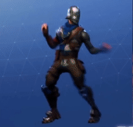
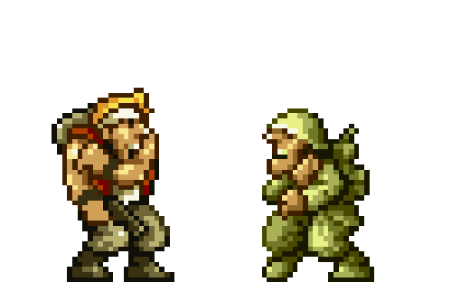

En otras noticias
Nueva ola de estafas con Fortnite y los V-Bucks gratis
Fortnite es el juego más popular en estos momentos, y probablemente uno de los motivos es que es completamente gratis.
Ahora bien, como muchos otros free to play, que es como se denominan, acepta micro pagos para ampliar la experiencia.
Y estos ‘micro pagos’, que no son necesarios para jugar pero sí para algunas opciones de personalización,
son para comprar V-Bucks, la ‘moneda’ dentro del juego.
Epic Games alerta de que hay una nueva ola de estafas en la que nos prometen V-Bucks gratis, pero no.
No te fíes donde veas V-Bucks gratis, porque tal y como ha anunciado la propia Epic Games, que es la compañía desarrolladora de Fortnite,
no son nada más que estafas. Hay decenas de estos ‘anuncios’ en vídeos de YouTube y en redes sociales, así como en otras plataformas,
que nos aseguran que vamos a conseguir V-Bucks gratis para Fortnite si, por ejemplo, descargamos aplicaciones.
Estas apps pueden contener malware, y en ningún caso nos van a dar nada gratis,
pero sí nos podríamos llevar un disgusto.
Lo ‘mejor’ que nos puede pasar es que no ocurra nada, y que sencillamente estemos aumentando las descargas de una app absolutamente inútil.
Mucho cuidado con los V-Bucks gratis para Fortnite: ninguno de los anuncios es cierto, y Epic Games alerta de posibles estafas
¿Para qué sirve todo esto? En las estafas que comentábamos antes, ese tipo de estafas en las que anuncian V-Bucks gratis para Fortnite, lo que hacen es aumentar las descargas de una app inútil.
Y además, nos convencen para quedarnos el máximo tiempo posible, porque así pueden monetizar la app y ganar dinero a nuestra costa aunque,
afortunadamente, sin perjudicarnos. Pero hay otras estafas más clásicas, como la de pedirnos detalles personales o de nuestra cuenta de usuario de
algún perfil.
Si quieres V-Bucks para Fortnite, no hay otra más que pasar por caja. De lo contrario es muy probable que acabes siendo presa de una estafa que, por otro lado, no debería sonarnos en absoluto extraño cuando ya ha sucedido anteriormente con otros videojuegos populares.

_Si Quieres Saber Mas Sobre El Tema Da Click En La Imagen De Abajo_
|
 *RetroGames*
*RetroGames* si quieres comprar juegos de xbox o una consola da click en la imagen
si quieres comprar juegos de xbox o una consola da click en la imagen